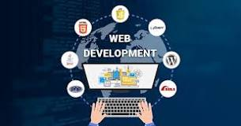

| frontend | backend | ||
|---|---|---|---|
| html | nodejs | ||
| css | MySQL |
Web development refers to the creating, building, and maintaining of websites. It includes aspects such as web design, web publishing, web programming, and database management. It is the creation of an application that works over the internet i.e. websites.
1. PHP PHP, an acronym for Hypertext Preprocessor, is a server-side scripting language and is one of the most widely used programming languages for backend web development. We can validate this statement by letting you know that platforms like Wikipedia, WordPress, Facebook, and many others are relying on PHP. This particular language is preferred for web development because of various prominent reasons such as cross-platform compatibility, OOPs features, easy integration with HTML, CSS, JavaScript, etc, huge community support, better flexibility & security, and many more. In addition, the language is quite easy to learn and use. Furthermore, there are various renowned PHP frameworks out there such as Laravel, Symfony, CodeIgniter, etc. that you can consider. 2. Python Another language that is being preferred for backend development, specifically in current times, is Python. It is a high-level, general-purpose programming language that supports multiple programming paradigms such as Object-Oriented, Procedural, and Functional. Instagram, Spotify, Google, etc. are some of the popular platforms that are using Python in their tech stacks. The language provides you with some remarkable features such as rich library support, easy integration with other languages, GUI Programming support, compatibility with trending technologies, etc. Also, Python has a very simple syntax and comes up with better code readability aspects that subsequently make it easy to learn and use. Several popular Python web frameworks to you can take into consideration are Django, Flask, etc. 3. JavaScript Honestly, JavaScript needs no introduction for its extensive role in web development. It is actually one of the fundamental units of web development alongside HTML and CSS. The language is being preferred by a huge number of developers for web development, and it is ranking at the top position as well at various renowned indices for top programming languages. Apart from web development, the language can also be used for game development, mobile application development, etc. Some of the considerable features of this particular language are – Imperative & Structured, Light-Weight, Object-oriented Programming Support, Platform Independent, and many others. Also, the best part is that JavaScript can be used for both – Frontend Development and Backend Development. Other languages that you can consider: Java, Go, Ruby, etc. Frameworks 4. Laravel Laravel is one of the most popular PHP frameworks available in the tech world. This open-source web framework follows the Model-View-Controller (MVC) architectural pattern and provides you with numerous enriching features like a built-in command-line tool called Artisan, pre-installed Object-Oriented and Modular libraries, Eloquent ORM (Object Relational Mapping), Template Engine, and many others. Moreover, the framework leverages you with various tools for particular tasks like dependency injection, unit testing, etc. The ready-to-use packages provided by Laravel include Cashier for managing subscription billing services, Envoy that provides a clean & minimal syntax for defining common tasks you run on your remote servers, Socialite for the simplified mechanism for OAuth authentication with providers like Facebook, GitHub, Google, etc. and various others. 5. Django Django is a Python-based open-source web framework that allows you to do web development more efficiently and without any hassle. Django follows the model-template-views (MTV) architectural pattern. The reason behind the immense popularity and demand for this particular framework is some of its noticeable features such as extensibility, rapid development, scalability, security, vast community, and many more. Businesses are using Django for various distinct web development areas such as social networking platforms, scientific computing platforms, content management systems, and various others. Some of the popular websites that are using Django are – Instagram, Mozilla, Pinterest, etc. If you want to get into web development using Python – you can surely give it a try to Django. Other frameworks that you can consider: Angular, Meteor, Spring, Ruby on Rails, etc. Databases 6. MongoDB MongoDB is a free and open-source document-oriented database that is very much popular among web developers. This NoSQL database uses JSON-like documents with optional schemas for storage & retrieval of data and comes up with much-needed scalability and flexibility. MongoDB provides you with numerous prominent features such as Ad-hoc queries, Indexing, Replication, Load Balancing, File Storage, Aggregation, Transactions, etc. In addition, the security and data recovery aspects of this particular database are quite better compared to various other database management systems. Other than that, MongoDB is compatible with various standard programming languages like C/C++, Java, PHP, Python, Ruby, and several others. 7. MySQL MySQL is another open-source relational database management system that is widely used for web-based applications. It is a fast and high-performance database that provides better scalability, usability, and reliability. Also, MySQL provides cross-platform compatibility, strong indexing support, SSL support for secured connections, powerful data encryption and accuracy, built-in replication support, and various other features. Meanwhile, MySQL can work on various distinct operating systems and is compatible with many popular languages like PHP, Java, etc. Let us tell you this as well that this particular framework, MySQL, is used by various renowned websites like Flickr, Twitter, Facebook, Drupal, Joomla, and many others. Other databases that you can consider: Oracle, PostgreSQL, etc.1. PHP PHP, an acronym for Hypertext Preprocessor, is a server-side scripting language and is one of the most widely used programming languages for backend web development. We can validate this statement by letting you know that platforms like Wikipedia, WordPress, Facebook, and many others are relying on PHP. This particular language is preferred for web development because of various prominent reasons such as cross-platform compatibility, OOPs features, easy integration with HTML, CSS, JavaScript, etc, huge community support, better flexibility & security, and many more. In addition, the language is quite easy to learn and use. Furthermore, there are various renowned PHP frameworks out there such as Laravel, Symfony, CodeIgniter, etc. that you can consider. 2. Python Another language that is being preferred for backend development, specifically in current times, is Python. It is a high-level, general-purpose programming language that supports multiple programming paradigms such as Object-Oriented, Procedural, and Functional. Instagram, Spotify, Google, etc. are some of the popular platforms that are using Python in their tech stacks. The language provides you with some remarkable features such as rich library support, easy integration with other languages, GUI Programming support, compatibility with trending technologies, etc. Also, Python has a very simple syntax and comes up with better code readability aspects that subsequently make it easy to learn and use. Several popular Python web frameworks to you can take into consideration are Django, Flask, etc. 3. JavaScript Honestly, JavaScript needs no introduction for its extensive role in web development. It is actually one of the fundamental units of web development alongside HTML and CSS. The language is being preferred by a huge number of developers for web development, and it is ranking at the top position as well at various renowned indices for top programming languages. Apart from web development, the language can also be used for game development, mobile application development, etc. Some of the considerable features of this particular language are – Imperative & Structured, Light-Weight, Object-oriented Programming Support, Platform Independent, and many others. Also, the best part is that JavaScript can be used for both – Frontend Development and Backend Development. Other languages that you can consider: Java, Go, Ruby, etc. Frameworks 4. Laravel Laravel is one of the most popular PHP frameworks available in the tech world. This open-source web framework follows the Model-View-Controller (MVC) architectural pattern and provides you with numerous enriching features like a built-in command-line tool called Artisan, pre-installed Object-Oriented and Modular libraries, Eloquent ORM (Object Relational Mapping), Template Engine, and many others. Moreover, the framework leverages you with various tools for particular tasks like dependency injection, unit testing, etc. The ready-to-use packages provided by Laravel include Cashier for managing subscription billing services, Envoy that provides a clean & minimal syntax for defining common tasks you run on your remote servers, Socialite for the simplified mechanism for OAuth authentication with providers like Facebook, GitHub, Google, etc. and various others. 5. Django Django is a Python-based open-source web framework that allows you to do web development more efficiently and without any hassle. Django follows the model-template-views (MTV) architectural pattern. The reason behind the immense popularity and demand for this particular framework is some of its noticeable features such as extensibility, rapid development, scalability, security, vast community, and many more. Businesses are using Django for various distinct web development areas such as social networking platforms, scientific computing platforms, content management systems, and various others. Some of the popular websites that are using Django are – Instagram, Mozilla, Pinterest, etc. If you want to get into web development using Python – you can surely give it a try to Django. Other frameworks that you can consider: Angular, Meteor, Spring, Ruby on Rails, etc. Databases 6. MongoDB MongoDB is a free and open-source document-oriented database that is very much popular among web developers. This NoSQL database uses JSON-like documents with optional schemas for storage & retrieval of data and comes up with much-needed scalability and flexibility. MongoDB provides you with numerous prominent features such as Ad-hoc queries, Indexing, Replication, Load Balancing, File Storage, Aggregation, Transactions, etc. In addition, the security and data recovery aspects of this particular database are quite better compared to various other database management systems. Other than that, MongoDB is compatible with various standard programming languages like C/C++, Java, PHP, Python, Ruby, and several others. 7. MySQL MySQL is another open-source relational database management system that is widely used for web-based applications. It is a fast and high-performance database that provides better scalability, usability, and reliability. Also, MySQL provides cross-platform compatibility, strong indexing support, SSL support for secured connections, powerful data encryption and accuracy, built-in replication support, and various other features. Meanwhile, MySQL can work on various distinct operating systems and is compatible with many popular languages like PHP, Java, etc. Let us tell you this as well that this particular framework, MySQL, is used by various renowned websites like Flickr, Twitter, Facebook, Drupal, Joomla, and many others. Other databases that you can consider: Oracle, PostgreSQL, etc.
web devlopement information he full form of PHP is Hypertext Preprocessor. It was abbreviated previously as Personal Home Page. It is a programming language widely used to build web applications or websites. It is the server-side scripting language encoded with HTML to develop Dynamic website, Static website or Web applications.14-Jan-2021
Python is a high-level, general-purpose programming language. Its design philosophy emphasizes code readability with the use of significant indentation.[32] Python is dynamically typed and garbage-collected. It supports multiple programming paradigms, including structured (particularly procedural), object-oriented and functional programming. It is often described as a "batteries included" language due to its comprehensive standard library.[33][34] Guido van Rossum began working on Python in the late 1980s as a successor to the ABC programming language and first released it in 1991 as Python 0.9.0.[35] Python 2.0 was released in 2000. Python 3.0, released in 2008, was a major revision not completely backward-compatible with earlier versions. Python 2.7.18, released in 2020, was the last release of Python 2.[36] Python consistently ranks as one of the most popular programming languages